Activities Sampler
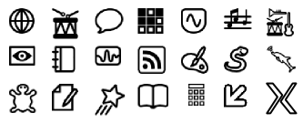
There are hundreds of Activities written for Sugar and new ones being created daily. A good place to look for new activities is wiki.laptop.org/go/Activities
Below is a sampler of the variety of Activities created and supported by the Sugar community.
Browse
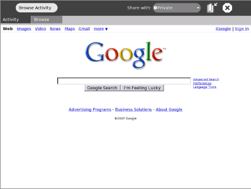
Browse is a simple Web application that lets you access and search the Internet and share bookmarks with your friends. (See the Browse chapter for more information.)
TamTamMini
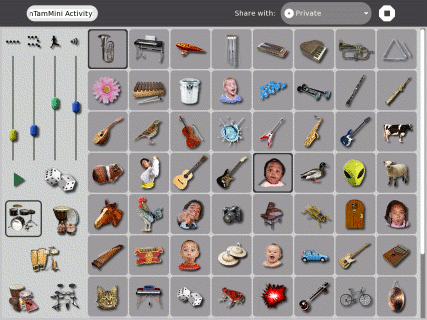
TamTam Mini is a fun, powerful way to perform music and play instruments. It is simple enough to be used by even the youngest ages,
Chat
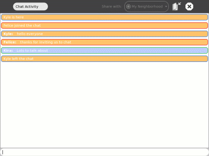
The Chat Activity lets you type messages that can be seen by other Sugar users. It can be used by two people or an entire classroom. (See the Chat chapter for more information.)
Memorize
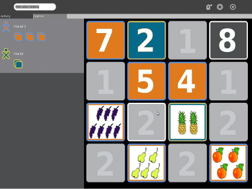
Memorize is the classic memory game of finding and matching pairs, but with a twist: the items in a pair can be any multimedia object, such as images, sounds and text. You can play existing games as well as create new ones.
SynthLab
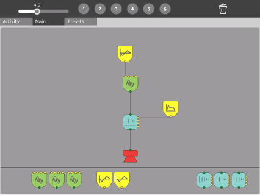
SynthLab is a mini-lab for acoustic- and electronic-circuit construction. It is designed for older children who are ready to venture into more sophisticated sound design.
TamTamEdit
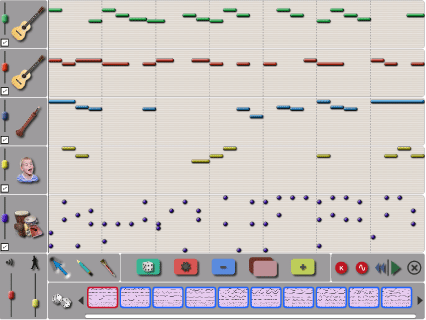
TamTam Edit is an intuitive environment for composing music. You can create, modify, and organize notes on virtual “tracks”, which allow for virtually limitless variations in musical styles.
TamTamJam
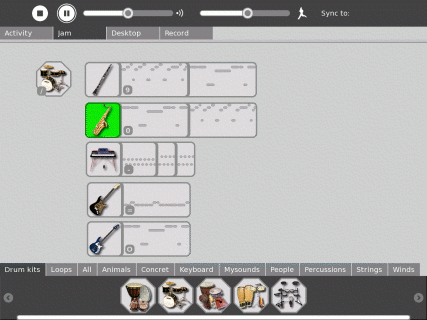
TamTam Jam is a fun, powerful way to perform music, play multiple instruments, and collaborate musically with other children.
Record
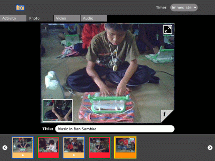
The Record Activity gives you a simple way to take pictures, view slide shows, and record video and audio—all content that can be shared with others. (See the Record chapter for more information.)
The Journal
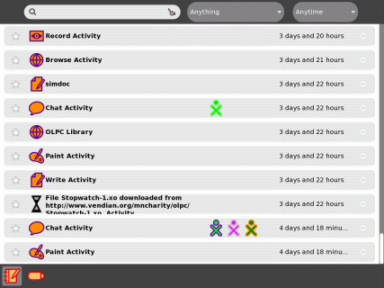
The Journal Activity is an automated diary of everything you do with your system. You can use the Journal to organize work or revisit a past project. Teachers and parents can use it to assess a child's progress. (See the Journal chapter more information.)
Measure
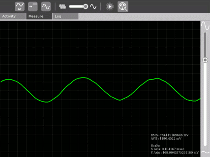
Measure is a tool that observe physical phenomena and real-world events. With it, you can measure and log data and create graphs. You can explore the data and connect events with each other.
Draw
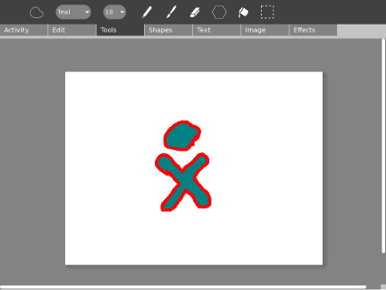
The Draw Activity gives you a canvas to draw pictures, by yourself or with friends. You can draw freeform images with a paintbrush and pencil, and use the dedicated toolbar to play and experiment with shapes. You can enter text, import images, and place items however you want.
Pippy Python

Pippy is a simple and fun introduction to programming in Python, the dynamic programming language underlying much of the software on the laptop.
Distance
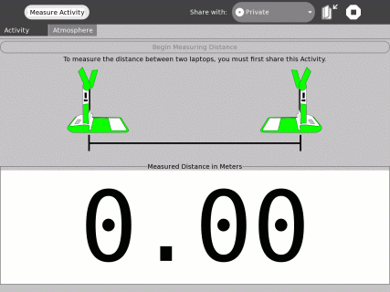
You can measure the distance between two laptops by measuring the length of time it takes for sound to travel between them. Along with the Measure and Record Activities, there are many ways to use the laptop to explore the physical environment.
Turtle Art

Turtle Art lets you program a Logo “turtle” to draw colorful and complex artwork. Simple programming elements easily snap together, to bring art to life. (See the Turtle Art chapter for more information.)
Write
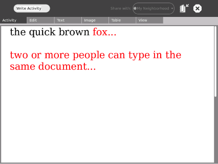
Write is a basic text editing application featuring straightforward tools and a simple interface. It provides an easy way to write a story, craft a poem, or complete an essay. It also has more advanced features like image insertion, table creation, and layout operations. It also supports collaborative real-time editing, so a group can work together to edit text easily and seamlessly. (See the Write chapter for more information.)
Etoys
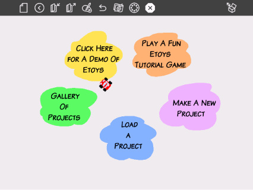
Etoys lets you create models, simulations, and games with text, graphics, and sound. This lets you explore ideas and learn by doing. You can also share desktops with other Etoys users in real time, encouraging immersive mentoring and play. Etoys has a worldwide community of users and developers who are working to create content, curriculum, and examples. (See wiki.laptop.org/go/Etoys for more information.)
Read an eBook
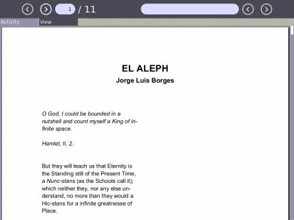
Sugar has a built-in eBook reader. The XO laptop has a screen that rotates 180 degrees and folds down on the keyboard, so you can read while holding the XO like a book. Read your favorite book on the XO while sitting outdoors in the sunlight.
Calculate
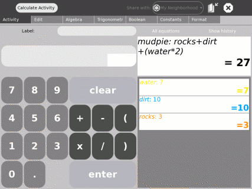
Calculate provides a generic calculator with a simple, straightforward interface. It is readable and easy to use for even the youngest children, but also supports more complicated mathematics.
X Windows
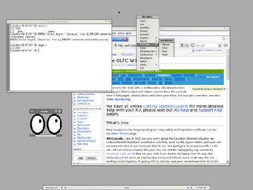
The X Windows Activity provides an X Windows System workspace within Sugar. Use this Activity to run standard X Windows programs.
Note to parents and teachers
There is an ever-growing array of downloadable content and built-in access to popular Web-based applications. This includes Google applications, SimCity, GCompris (a suite of award-winning educational software for children), and hundreds of other applications. There are currently thousands of software developers around the world developing content for Sugar. This community is interested in your feedback so that they can better serve the needs of children learning.
Author : FindingActivities
© Walter Bender 2008
Modifications:
adam hyde 2008
Janet Swisher 2008
License : General Public License